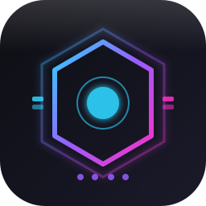

Centrum sterowania ekosystemem GREJEM
Brak aplikacji pasujących do zapytania.
Konfiguracja huba i adresów aplikacji.
Jeśli adresem jest inna maszyna (np. http://192.168.1.50:8080/), auto-start jest pomijany.
http://192.168.1.50:8080/
Wersja: —